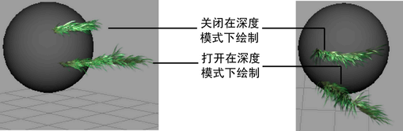
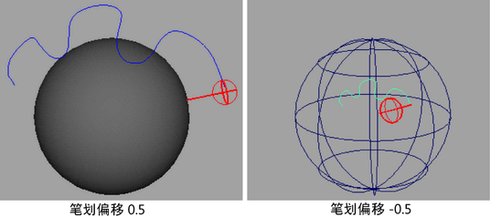

若要访问这些选项，请在“建模”(Modeling)菜单集中选择“生成 > Paint Effects 工具”(Generate > Paint Effects Tool) >  。
。
笔划设置(Stroke Settings)
- 绘制为网格(Draw as mesh)
-
在场景视图中以交互方式预览笔划的渲染外观；您不必在“Paint Effects”面板中查看这些笔划。也可以在场景视图中编辑笔刷属性并查看笔划所发生的更改（“Paint Effects”形状）。
若要对笔划对象建模，需要将其从“Paint Effects”转化为多边形。
若要将所有 Paint Effects 绘制为多边形，请选择。若要将选定笔划绘制为多边形，请选择这些笔划，然后在 strokeShape“属性编辑器”(Attribute Editor)中启用“绘制为网格”(Draw as mesh)（或者，在“Paint Effects 工具”(Paint Effects Tool)设置编辑器中启用“绘制为网格”(Draw as mesh)）。
注：- 如果处于启用状态，但是 Paint Effects 笔划没有显示为网格，则在笔划的属性编辑器中启用“绘制为网格”(Draw as mesh)。
- “绘制为网格”(Draw as mesh)处于启用状态时，它可能会稍微慢于线绘制，尤其是在笔刷或绘制对象有动画时的播放过程中。若要加快播放，请禁用“绘制为网格”(Draw as mesh)或降低“显示质量”(Display quality)，这不会影响渲染输出。
- 对“Paint Effects” 的“头发”(Hair)使用“绘制为网格”(Draw as mesh)不会提供更多的有用信息，并且实际上可能会更慢。为“头发”(Hair)改用线绘制。
- 在深度模式下绘制(Paint at depth)
-
“在深度模式下绘制”(Paint at depth)处于禁用状态时，绘制深度值会在您将笔刷拖动到场景中时发生更改。如果笔划有管，则管将从绘制的曲面上“增长”。这是默认设置。
“在深度模式下绘制”(Paint at depth)处于启用状态时，笔划深度值将在您首次单击笔刷时确定，然后固定为该值。如果笔划有管，则管每步将从垂直于路径的平面上“增长”。这有助于创建想要管从路径中长出的效果（例如，喷泉、烟囱中的烟雾或尾部）。“Paint Effects 工具”(Paint Effects Tool)光标会发生更改，将垂直于法线投射到视图中，以表示您正在绘制深度。
该设置无法在绘制笔划后更改。
 - 显示质量(Display quality)
-
设置下一个笔划的线框显示质量。百分比越大，笔划线框表示渲染笔划的程度越高。该选项的结果取决于为模板笔刷定义的“简化方法”(Simplify Method)。可以选择让显示百分比影响每步管的数量、分段的数量或者这两者。
该设置可以在绘制笔划后更改。有关详细信息，请参见修改笔划显示质量。
- 曲面偏移(Surface offset)
-
设置下一个笔划偏移和其上绘制笔划的对象或平面之间的所需距离（以世界单位表示）。偏移笔划与平移笔划不同。偏移笔划时，笔划将创建为垂直于笔划路径并与笔划路径保持统一距离，因此如果曲面是凸面，笔划将大于笔划路径。同样，如果曲面是凹面，笔划将小于笔划路径。光标将发生更改以反映置换值。
提示： 使用 M 热键（“热键编辑器”(Hotkey Editor)“笔刷工具”下的“ModifyDisplacement”）可以交互式更改笔划偏移。有关其他“Paint Effects”热键的信息，请参见使用默认“Paint Effects”热键。该设置可以在绘制笔划后更改。有关详细信息，请参见修改现有笔划的笔划设置。
- 压力贴图 1(Pressure map 1)、2 和 3
-
使用该菜单可选择要映射到光笔压力的笔划属性。不需要将所有三个笔刷属性都映射到光笔压力。选择“禁用”(Off)将没有压力敏感度。
- 最小压力 1(Pressure min 1)、2 和 3
-
设置压力映射生效的最小压力。可以绘制的最小属性值由“最小压力”(Pressure Min)和贴图属性设置值的乘积确定。例如，如果要将“管长度”(Tube Length)映射到压力，笔划的管长度是 3，“最大压力”(Pressure Max)是 0.5，则在按压光笔时无论有多轻，管长度绝不会小于 3 x 0.5 即 1.5。使用可能的最小压力最低值可以增加映射范围。
- 最大压力 1(Pressure max 1)、2 和 3
-
设置压力映射生效的最大压力。可以绘制的最大属性值由“最大压力”(Pressure Max)和贴图属性设置值的乘积确定。例如，如果要将“管长度”(Tube Length)映射到压力，笔划的管长度是 3，“最大压力”(Pressure Max)是 2，当您尽量用力按压时，管长度将是 3 x 2 即 6。